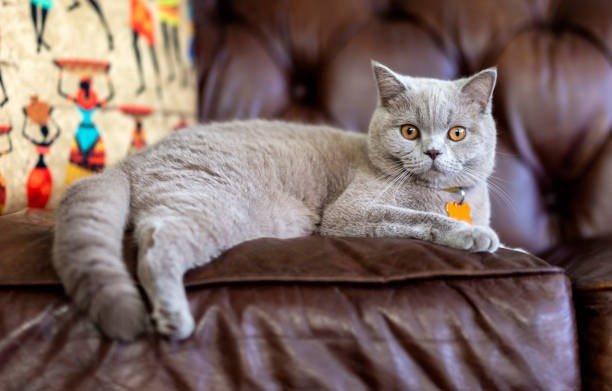
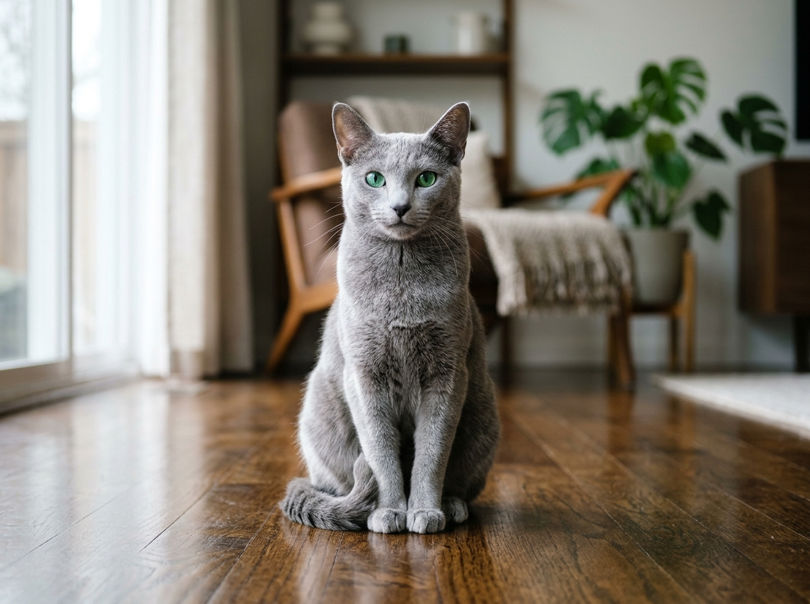
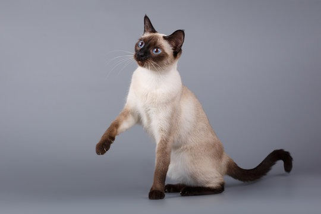

Welcome to
Persatuan Kucing Depok
Pusat informasi dan edukasi dasar seputar kucing terlengkap di Kota Depok — mulai dari karakteristik 10 ras kucing populer, tips memilih makanan basah dan kering, hingga daftar lokasi petshop terpercaya dengan peta rute langsung!

Persatuan Kucing Depok
Edukasi & direktori ramah bagi semua pemilik kucing di Depok! 🐱
Apa itu Persatuan Kucing Depok?
Persatuan Kucing Depok (PKD) hadir sebagai platform informasi digital yang membantu pemilik kucing pemula maupun berpengalaman di Kota Depok untuk memperoleh pengetahuan dasar tentang perawatan, variasi ras kucing di dunia, serta kebutuhan nutrisi harian yang tepat.
Kami merangkum data dan lokasi petshop di berbagai kecamatan Depok (seperti Beji, Sukmajaya, Cimanggis, Limo, hingga Sawangan) agar kamu tidak perlu bingung mencari pakan dan perlengkapan anabul tercinta.
🐱 "Kucing sehat, pemilik bahagia!"
3 Langkah Mudah Bersama PKD
Semua yang kamu butuhkan untuk merawat kucing kesayangan di Kota Depok
Kenali Jenis Kucing
Pelajari 10 ras kucing terpopuler di dunia dan Indonesia — mulai dari Persia, Maine Coon, Siamese, hingga Kucing Kampung yang tangguh dan adaptif.
Lihat Katalog Kucing →Pilih Nutrisi yang Pas
Pahami perbedaan makanan kering vs basah, porsi makan untuk kitten maupun kucing dewasa, serta tips membaca kandungan gizi pada kemasan.
Panduan Makanan →Temukan Petshop Depok
Temukan petshop terdekat di sekitarmu dengan alamat lengkap, jam operasional, dan tombol navigasi Google Maps untuk belanja tanpa repot.
Cari Lokasi Petshop →
Inisiatif Pelajar SMA
dengan Semangat Besar
Kecintaan pada Kucing
Dibangun dari kepedulian bersama terhadap kesejahteraan dan kesehatan anabul di Depok.
Informasi Mudah & Praktis
Konten disajikan dengan bahasa sederhana, ramah pelajar, dan mudah dipahami siapa saja.
Riset & Terpercaya
Tips nutrisi dan data jenis kucing disusun dari sumber referensi umum yang bertanggung jawab.
Karya Study Group
Proyek pembelajaran KKA Kelas XI SMA Muhammadiyah 4 Depok berbantuan AI Coding.
🐾 Kucing Paling Populer
Intip beberapa ras kucing yang paling diminati para pecinta kucing di Indonesia
Kucing Persia
Berbulu PanjangDikenal dengan bulu lebat indahnya dan wajah pesek yang khas. Sangat kalem, manis, dan menyukai suasana rumah yang tenang.
Lihat Ras Persia →British Shorthair
Berbulu PendekMemiliki pipi tembem (chubby), mata oranye tajam, dan sifat yang santai. Mudah dirawat dan sangat ramah untuk keluarga.
Lihat Ras BSH →
Russian Blue
Berbulu PendekBulu perak kebiruan mengkilap dengan mata hijau zamrud yang memesona. Sangat anggun, tenang, dan cerdas.
Lihat Russian Blue →
Kucing Siamese
Berbulu PendekMata biru berkilau dan corak point khas di wajah dan telinga. Sangat cerdas, vokal, dan suka diajak mengobrol!
Lihat Ras Siamese →